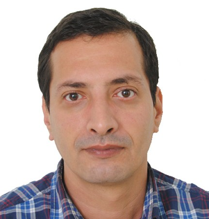

nolondil@gmail.com
mobile: 0557 435 213
Date de naissance: 10 octobre 1975
Adresse: 22 rue Mouzaoui Abdelaziz, Alger
# BOUSMINA Lazhar
(Administrateur système)
## Compétences Techniques
### Windows
* Mise en place, administration et maintenance d’une infrastructure Active Directory dans des environnements Windows Server (2008 à 2025)
+ Mise en place d’un serveur de deploiement Windows
* Gestion des Contrôleur de domaine, Serveurs
* Configuration d’un cluster de basculement Windows
### Virtualisation:
* Installation et configuration d’un hyperviseur: Hyper-V, vSphere Vcenter et Proxmox.
* Configuration du stockage réseau de type NAS et SAN.
### Linux:
* Installation, administration des serveurs Linux : Redhat et Debian
### Réseaux
* Configuration des réseaux LAN, WAN.
* Configuration et dépannage des protocoles réseaux.
* Configuration routeurs et switches L2 et L3.
* Configuration et administration des pare-feux.
## Working Experience
#### Current Company (Project Manager, 2015/08 - present)
* Lead team of 10 to oversee conception, requirement gathering, documentation and rollout.
* Conduct troubleshooting, analysis and support. Gather user feedback, document bugs and change requests.
#### Second Company (System Analyst, 2011/06 - 2015/07)
* Led team of 5 for application development
* Coordinated with developers, support staff and vendors across Hong Kong, China, Taiwan
#### My first Company (Analyst Programmer, 2005/01 - 2011/05)
* Develop multiple applications using Javascript, Java, PHP, Powerbuilder, Oracle
## Projects
* [Casual-Markdown](https://github.com/casualwriter/powerpage) - a lightweight markdown parser
* [Powerpage](https://github.com/casualwriter/powerpage) - a lightweight browser for html applications
## Education & Qualifications
* AWS Certification (2021/12)
* Oracle Certified Professional (2020/02)
* Project Management Professional (PMP) (2018/10)
* Bachelor of Computer Science (Sep 2004)
* The Chinese University of Hong Kong (2000 - 2004)
## Misc. Information
* Languages: English (good), Cantonese (fluent/native), Mandarin (good)
* Availability: 1 month's notice